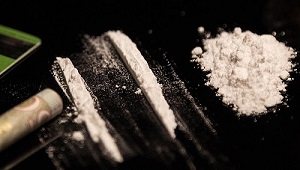

Como as substâncias químicas podem afetar ou causar transtornos mentais
O abuso de substâncias psicoativas por pessoas portadoras de transtornos mentais graves acaba sendo uma comorbidade que se mostra como regra, e não como exceção. Esse fato tem incitado inúmeros pesquisadores da área da saúde mental a aprofundarem seus estudos em relação ao uso abusivo de substâncias em portadores de transtornos mentais, posto que atualmente tal fenômeno tem sido atribuído a uma maior disponibilidade de álcool e drogas para a população em geral
Abaixo reunimos alguns transtornos que são intensificados pelo uso de substâncias químicas:
Depressão
O consumo de entorpecentes pode gerar grandes prejuízos à saúde, uma vez que isso causa um efeito reverso e tornar as crises depressivas ainda mais fortes. Mesmo que o consumo de drogas cause uma sensação de alívio momentâneo, essa gratificação imediata pode durar pouco e exigir doses mais fortes para fazer essa “fuga” da realidade perdurar. Desse modo, mantém-se viva a ilusão de resolver os problemas pelo abuso de drogas.
O uso de substâncias ilícitas pode abrir caminho para a evolução dos problemas depressivos. Nessas circunstâncias, o ideal é reconhecer a necessidade de pedir ajuda e de procurar um suporte profissional, que possa ajudar a vencer o vício e a restaurar a estabilidade mental.
“Algumas pessoas utilizam as drogas , a princípio, porque confortam e aliviam. Esse comportamento acaba num círculo vicioso. Porque depois da sensação de prazer vem a culpa e a tristeza. Então o indivíduo volta a consumir em quantidade maior e mais frequentemente. E quando menos espera já criou a relação de dependência, e às vezes mesmo querendo já não consegue ficar sem aquela sensação e com isso surgem diversos outros problemas que podem ter graves consequências”
Anorexia e bulimia
A obsessão pela magreza e o culto ao corpo perfeito são mecanismos que desencadeiam uma série de problemas psicológicos. A comida, muitas vezes, é a válvula de escape ou o empecilho para que essas pessoas travem verdadeiras batalhas com o corpo. Por isso, elas procuram refúgios como drogas ilícitas, com exemplos da cocaína e metanfetamina, para inibirem o apetite. Essa é uma forma de esses pacientes anestesiarem o emocional, uma maneira de escaparem para não terem de enfrentar os problemas.
No caso da anorexia, por exemplo, os jovens, mesmo evitando o consumo de qualquer substância, podem utilizar certas quantidades de álcool para atenuar a ansiedade de comer e, consequentemente, engordar.
Todos esses problemas provocam sérios danos à saúde dos pacientes de forma geral, podendo levar, inclusive, à morte causada pela desnutrição ou pelo suicídio, em casos extremos.
Por fim, o acompanhamento médico, psicológico, com nutricionistas ou nutrólogos, aliado a outros possíveis recursos terapêuticos, é indicado para pacientes que enfrentam distúrbios alimentares e abuso de drogas. Para os casos mais severos, ainda assim, a internação em clínicas de recuperação pode ser uma saída viável para a família.
Esquizofrenia
Até hoje, não foi descoberta a causa da esquizofrenia, mas a combinação de alguns fatores genéticos, cerebrais e do ambiente podem desencadear a doença. A esquizofrenia é caracterizada por sintomas psicóticos, que incluem delírios, alucinações, pensamento e fala desorganizados e comportamento bizarro e inadequado.
Estima-se que aproximadamente 3,5% dos dependentes de álcool e outras drogas possuem esse transtorno como diagnóstico psiquiátrico adicional. Pesquisas apontam que as chances de um indivíduo ser portador de esquizofrenia e usar substâncias de abuso são 4,6 vezes maiores que no restante da população. Álcool e maconha estão entre as drogas mais associadas à esquizofrenia
Transtorno Afetivo Bipolar
O Transtorno Afetivo Bipolar é um transtorno de humor com forte associação ao uso abusivo de substâncias psicoativas, como os medicamentos, as drogas e outras substâncias químicas que distorcem o funcionamento cerebral – seja causando efeito depressor ou estimulante –, alterando, assim, a cognição e o comportamento. Fatores ambientais, químicos e psicológicos podem desencadear tal transtorno e tornar o indivíduo um portador vitalício.
Vários pesquisadores defendem que se faz necessário um diagnóstico específico, pelo qual se pode reconhecer uma dependência química como comorbidade
do transtorno, e eles esclarecem que há casos em que o paciente não consegue lidar com a doença, procurando, então, uma saída secundária: a droga ou algum medicamento com efeitos colaterais relevantes. Apesar de ainda existirem muitas lacunas acerca do entendimento do TAB associado ao uso indevido de substâncias psicoativas, está se investindo no desenvolvimento de técnicas diagnósticas e terapêuticas mais precisas e eficazes para tratar esta
comorbidade cada vez mais comum na sociedade.